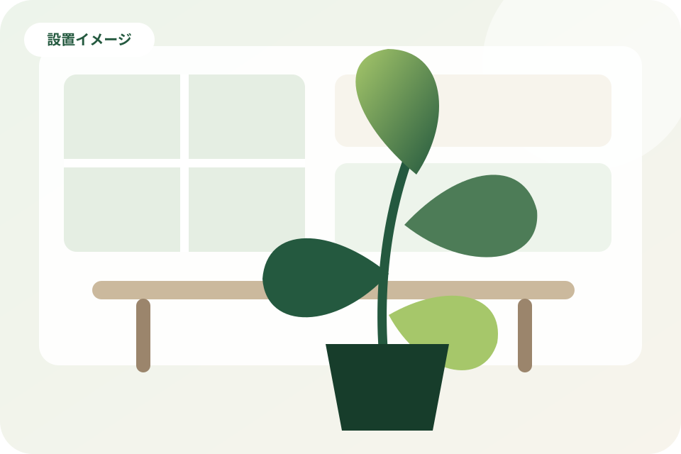
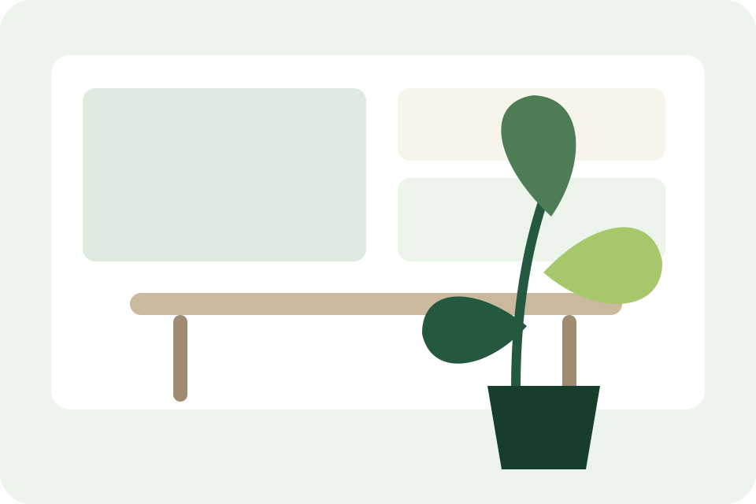
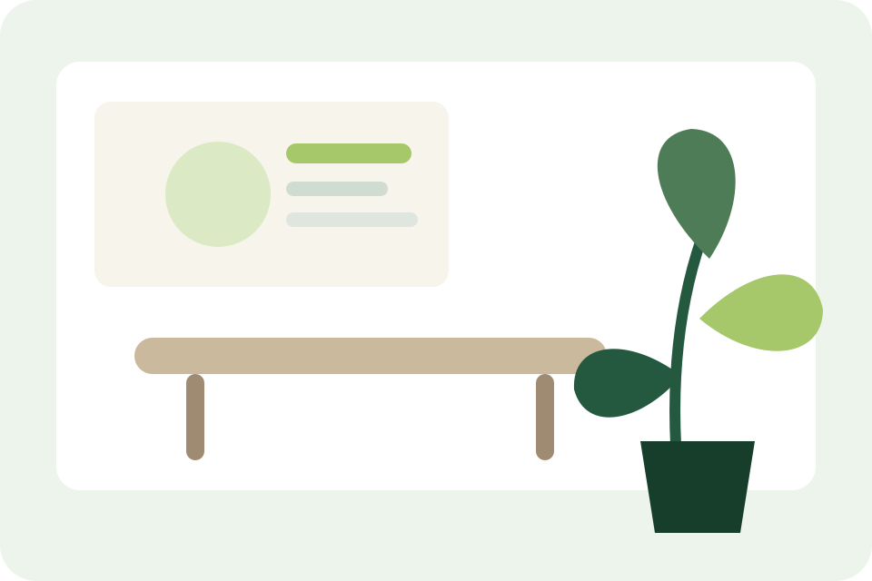
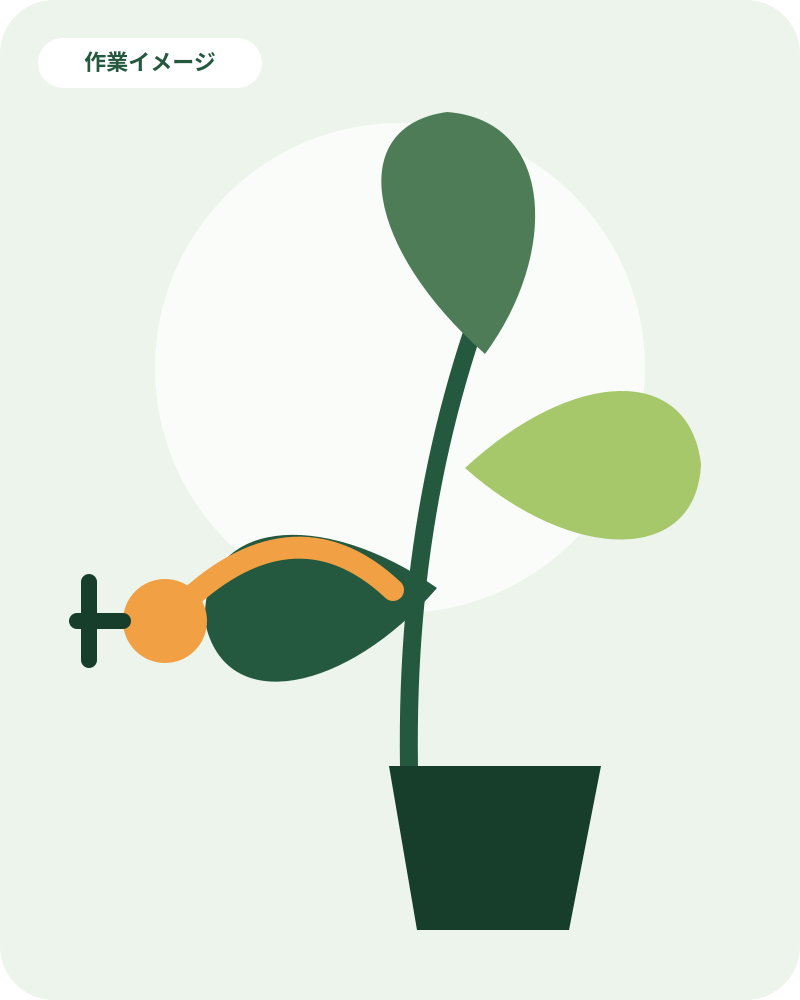

水やりや手入れが続かない
担当者が変わっても、植物の状態を保てる管理方法を相談したい。
[主な対応地域]の法人・店舗・施設へ
オフィス・店舗・クリニック・福祉施設へ、環境に合わせた観葉植物をご提案します。給水や剪定などの定期メンテナンスもまとめてお任せいただけます。

Your concerns
設置する植物が決まっていなくても大丈夫です。空間と運用のお悩みを確認し、無理のない方法を一緒に考えます。
担当者が変わっても、植物の状態を保てる管理方法を相談したい。
日当たり、空調、人の動線に合う種類や鉢の大きさを選びたい。
枯葉や害虫など、気になる変化が出た時に相談できる相手がほしい。
圧迫感を出さず、清潔で自然な印象を空間へ加えたい。
Why choose us
植物を置くことだけでなく、日々の管理と連絡のしやすさまで含めて支えます。
明るさ、広さ、空調、動線を確認し、空間に合う植物と配置をご提案します。
給水、葉の清掃、剪定など、必要な作業を定期訪問時に行います。
植物の状態やレイアウト変更に応じ、交換や追加について相談できます。
契約後は、訪問予定や作業内容をLINEから確認できる運用につなげます。
Services
初めて導入する場所も、すでに植物がある場所も、状況を確認してご案内します。
空間の条件と雰囲気に合わせ、植物と鉢を組み合わせてご提案します。
設置＋定期管理受付、執務スペース、エントランスなど、利用目的に合う配置を考えます。
法人・店舗向け待合室や共用部へ、動線や清掃のしやすさに配慮した設置を検討します。
医療・福祉施設向け給水、葉の清掃、剪定、枯葉除去、植物状態の確認などを行います。
訪問管理店舗前や施設周辺の植栽について、対応可否を確認してご案内します。
季節に合わせた植物や装飾の相談を受け付けます。
イベントなど短期間の利用について、条件を確認してご案内します。
植物や鉢の引取りについて、対象と条件を確認します。
Benefits
見た目だけでなく、誰がどのように管理するかまで考えることで、導入後も続けやすい状態を目指します。
Installation image
以下は営業デモ用の設置イメージです。実績写真・顧客名・効果数値は掲載していません。

設置イメージ来客を迎える場所へ、視界を遮りすぎない植物を配置する想定です。
通路幅や清掃性に配慮しながら、やわらかな印象を加える想定です。

設置イメージ利用者の動線を妨げない位置へ、安定感のある鉢を置く想定です。
店内の雰囲気と入口の視認性を考え、植物の高さや鉢を選ぶ想定です。
本番公開では、掲載許可を確認した写真と説明だけを使用します。
Flow
最初から植物の種類や鉢数を決める必要はありません。設置場所を確認しながら順番に進めます。
Web・LINEなどから相談内容をお送りください。
写真や現地確認で、明るさ・広さ・動線を確認します。
空間と管理方法に合う植物や鉢を検討します。
決定した内容に沿って、植物を搬入し設置します。
契約内容に応じて訪問し、必要な手入れを行います。
状態やレイアウト変更に応じ、必要な対応を相談します。
訪問予定や作業報告を分かりやすく確認できる運用へつなげます。

Maintenance
訪問時に植物の状態を確認し、契約内容に沿って必要な手入れを行います。
Service area
対応地域は店舗情報の確認後に公開します。地域の境界付近や複数拠点への設置も、まずはご相談ください。
[主な対応地域]
営業デモのため、具体的な市区町村名・住所・地図は表示していません。
FAQ
詳しい条件は設置場所や契約内容によって異なります。分からないことは相談時にお伝えください。
置きたい場所の写真や、現在困っていることから相談できます。
必要ありません。設置場所の明るさ、広さ、雰囲気、ご希望を確認し、適した植物や配置をご提案します。
定期訪問時に行う作業は契約内容によって異なります。店舗の実際の運用を確認したうえで、必要な管理方法をご案内します。
店舗、クリニック、福祉施設などを想定しています。設置環境や安全面を確認し、対応可否をご案内します。
はい。写真があると、広さや雰囲気を共有しやすくなります。正確な判断が必要な場合は、現地確認をご案内します。
状態を確認し、必要な手入れや交換について相談します。交換条件などは契約内容を確認してご案内します。